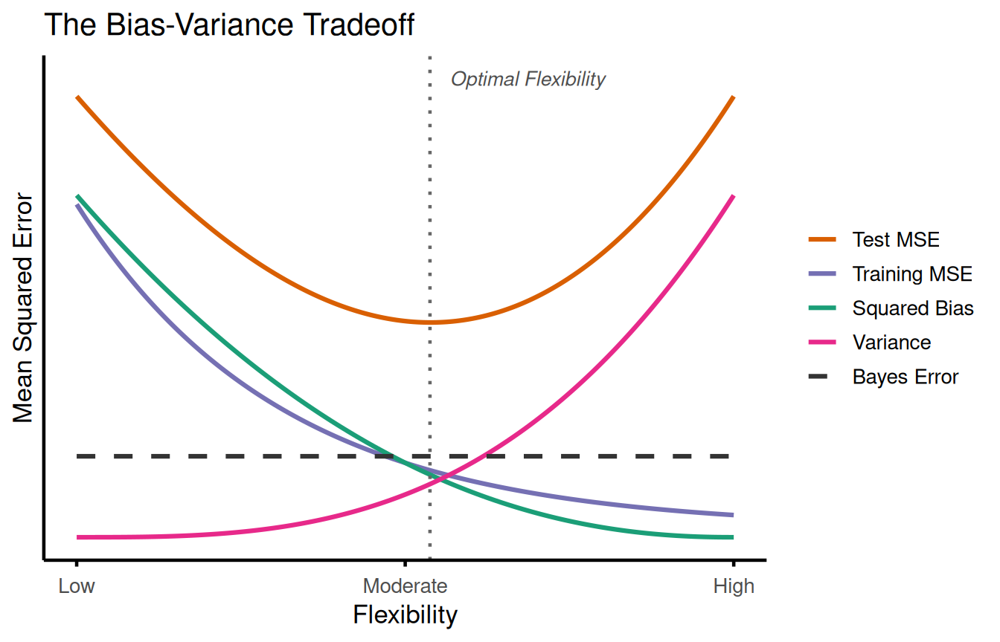

2 Statistical Learning
2.1 Conceptual
2.1.1 Question 1
For each of parts (a) through (d), indicate whether we would generally expect the performance of a flexible statistical learning method to be better or worse than an inflexible method. Justify your answer.
- The sample size n is extremely large, and the number of predictors p is small.
Flexible > inflexible Lots of data available, allowing for a flexible model to capture the underlying patterns with a few predictors.
- The number of predictors p is extremely large, and the number of observations n is small.
Inflexible > Flexible Lots of predictor assigned to little info. May lead to overfitting with a flexible method. Inflexible method will have higher bias, but lower variance and the predictors will “latch” less spuriously to the data.
- The relationship between the predictors and response is highly non-linear.
Flexible > non-nlexible Flexible methods are more apt to estimate f(x) than inflexible methods, as they have more df to accomodate non-linearity. e.g., OLS regression vs. adding polynomials or splines
- The variance of the error terms, i.e. \(\sigma^2 = Var(\epsilon)\), is extremely high.
Inflexible > flexible Inflexible method less affected by high variability of the error term. Less overfitting through lower variance, higher bias.
2.1.2 Question 2
Explain whether each scenario is a classification or regression problem, and indicate whether we are most interested in inference or prediction. Finally, provide n and p.
- We collect a set of data on the top 500 firms in the US. For each firm we record profit, number of employees, industry and the CEO salary. We are interested in understanding which factors affect CEO salary.
Inference - n = 500; p = 3
- We are considering launching a new product and wish to know whether it will be a success or a failure. We collect data on 20 similar products that were previously launched. For each product we have recorded whether it was a success or failure, price charged for the product, marketing budget, competition price, and ten other variables.
Classification - n = 20; p = 13
- We are interested in predicting the % change in the USD/Euro exchange rate in relation to the weekly changes in the world stock markets. Hence we collect weekly data for all of 2012. For each week we record the % change in the USD/Euro, the % change in the US market, the % change in the British market, and the % change in the German market.
Prediction; n = 52; p = 3
2.1.3 Question 3
We now revisit the bias-variance decomposition.
- Provide a sketch of typical (squared) bias, variance, training error, test error, and Bayes (or irreducible) error curves, on a single plot, as we go from less flexible statistical learning methods towards more flexible approaches. The x-axis should represent the amount of flexibility in the method, and the y-axis should represent the values for each curve. There should be five curves. Make sure to label each one.
library(ggplot2)
library(tidyr)
flex <- seq(0, 1, length.out = 200)
sq_bias <- 3.8 * (1 - flex)^2.2 + 0.1
variance <- 0.1 + 3.8 * flex^3
bayes_err <- rep(1.0, length(flex))
test_err <- sq_bias + variance + bayes_err
train_err <- 3.6 * exp(-3.2 * flex) + 0.2
curves <- data.frame(
flex = flex,
`Squared Bias` = sq_bias,
`Variance` = variance,
`Bayes Error` = bayes_err,
`Test MSE` = test_err,
`Training MSE` = train_err,
check.names = FALSE
)
opt_flex <- flex[which.min(test_err)]
df_long <- pivot_longer(curves, -flex, names_to = "curve", values_to = "value")
df_long$curve <- factor(df_long$curve, levels = c("Test MSE", "Training MSE",
"Squared Bias", "Variance", "Bayes Error"))
p <- ggplot(df_long, aes(x = flex, y = value, color = curve, linetype = curve)) +
geom_line(linewidth = 1.1) +
geom_vline(xintercept = opt_flex, linetype = "dotted", color = "grey40",
linewidth = 0.8) +
annotate("text", x = opt_flex + 0.03, y = 5.2, label = "Optimal Flexibility",
hjust = 0, size = 3.5, fontface = "italic", color = "grey30") +
scale_color_manual(
values = c(
"Test MSE" = "#D95F02",
"Training MSE" = "#7570B3",
"Squared Bias" = "#1B9E77",
"Variance" = "#E7298A",
"Bayes Error" = "#333333"
)
) +
scale_linetype_manual(
values = c(
"Test MSE" = "solid",
"Training MSE" = "solid",
"Squared Bias" = "solid",
"Variance" = "solid",
"Bayes Error" = "dashed"
)
) +
scale_x_continuous(breaks = c(0, 0.5, 1), labels = c("Low", "Moderate", "High")) +
scale_y_continuous(breaks = NULL) +
labs(
x = "Flexibility",
y = "Mean Squared Error",
color = NULL,
linetype = NULL,
title = "The Bias-Variance Tradeoff"
)
if (requireNamespace("ggprism", quietly = TRUE)) {
p + ggprism::theme_prism(base_size = 13) +
theme(legend.position = "right", axis.ticks.y = element_blank())
} else {
p + theme_minimal(base_size = 13) +
theme(
axis.line = element_line(color = "black", linewidth = 0.8),
axis.ticks.x = element_line(color = "black", linewidth = 0.8),
axis.ticks.y = element_blank(),
panel.grid = element_blank(),
legend.position = "right"
)
}
- Explain why each of the five curves has the shape displayed in part (a).
Squared bias - Inflexible model impose rigid assumptions (e.g., linearity). As flexibility increases, the model as the freedom to bend and approximate complex shapes (f), so bias decreases monotonically.
Variance - Increases with flexiblity because the model becomes hypersensitive to the specific training observations and their noise. Fitting a different training set would produce a widly different curve.
Training error - Always decreases monotonically because more flexible models have the df to get closer to the training observations (and can interpolate them perfectly).
Test error - Follows a U-shape because \(test MSE = bias^2 + Var(f) + \epsilon^2\). Initially, bias drops faster than variance rises (error goes down). But past the optimal point, Var(f) explodes faster than bias decreases, driving test error back up.
Irreducible error - Stays flat because it stems from unmeasured variables, sensoir noise and random fluctuatioi that do not depend on the model or its flexibility.
2.1.4 Question 4
You will now think of some real-life applications for statistical learning.
- Describe three real-life applications in which classification might be useful. Describe the response, as well as the predictors. Is the goal of each application inference or prediction? Explain your answer.
1. Bank churn: Response = Churned within 6 months (Yes/No). Predictors = account balance, transaction volume, tenure. Goal = Prediction (flagging accounts to offer promotions)
2. Chronic pain: Response = Pain resolved (Yes/No). Predictors = demographics, pain sensitization score. Goal = Inference (understanding drivers of recovery).
Employee turnover: Response = Resigned within 1 year (Yes/No). Predictors = salary, satisfaction score, commute time. Goal = Inference (designing retention policies)
- Describe three real-life applications in which regression might be useful. Describe the response, as well as the predictors. Is the goal of each application inference or prediction? Explain your answer.
Pain trajectories: Response = Continuous pain rating (e.g., 0-10 numerical rating scale). Predictors = session count, exercise intensity, baseline pain. Goal = Inference/Prediction
Blood pressure: Response = Change in systolic BP (mmHg). Predictors = treatment dosage, age, baseline BP. Goal = Inference (estimating treatment efficacy).
Test MSE: Response = Numerica test MSE. Predictors = degrees of freedom/model frexibility. Goal: Prediction
- Describe three real-life applications in which cluster analysis might be useful.
Cancer cells: If we have tumor samples and no labels, we can use clustering to discover novel cancer subtypes based on gene expression profiles.
Stars: Grouping astronomical bodies based on luminosity, temperature and spectral pattern witout predifined categories.
Car insurance: Customer segmentation – grouping policy-holders into driving profiles (e.g., weekend drivers, high-speed commuters, rural drivers) based on telemetric data to tailor marktering or product tiers.
2.1.5 Question 5
What are the advantages and disadvantages of a very flexible (versus a less flexible) approach for regression or classification? Under what circumstances might a more flexible approach be preferred to a less flexible approach? When might a less flexible approach be preferred?
Flexible model: Will be prefered when the goal is prediction, i.e., when we’re more interested in accurately prediction Y than understanding f(x). Because of the low bias, it should be able to match the true, underlying shape more easily. However, because it has high variance, it is at higher risk of overfitting, especially if the number of observation is small.
Inflexible model: Will be prefered when the goal is inference, when we’re willing to sacrifice some accuracy in Y (high bias) to be able to understand f(x). Because of the low variance, is less at risk of overfitting, but will not capture the true, underlying shape as easily as a flexible model would. However, f(x) becomes easier to interpret.
2.1.6 Question 6
Describe the differences between a parametric and a non-parametric statistical learning approach. What are the advantages of a parametric approach to regression or classification (as opposed to a non-parametric approach)? What are its disadvantages?
Parametric: - Reduces the problem to estimating a fixed, finite set of parameters. Once parameters are known, training data can be discarded. - Advantages: Much easier to estimate, requires far fewer observationis, less risky for overfitting, highly interpretatable. - Disadvantages: High bias if the assumed function form (e.g., straight line) doesn’t match the true form.
Non-parametric: - Makes no explicit assumption about the functional form of f(x) and does not fit a fixed set of parameters. Instead, lets the data directly define the shape. - Advantages: Can fit almost any arbitrary, complex shape (very low bias) - Disadvantages: Requires a large number of observations to avoid overfitting, and is computationally heavy and harder to interpret
2.1.7 Question 7
The table below provides a training data set containing six observations, three predictors, and one qualitative response variable.
Obs. \(X_1\) \(X_2\) \(X_3\) \(Y\) 1 0 3 0 Red 2 2 0 0 Red 3 0 1 3 Red 4 0 1 2 Green 5 -1 0 1 Green 6 1 1 1 Red Suppose we wish to use this data set to make a prediction for \(Y\) when \(X_1 = X_2 = X_3 = 0\) using \(K\)-nearest neighbors.
- Compute the Euclidean distance between each observation and the test point, \(X_1 = X_2 = X_3 = 0\).
obs <- rep(0, 3)
distance_1 <- sqrt(sum((c(0, 3, 0) - obs)^2))
distance_2 <- sqrt(sum((c(2, 0, 0) - obs)^2))
distance_3 <- sqrt(sum((c(0, 1, 3) - obs)^2))
distance_4 <- sqrt(sum((c(0, 1, 2) - obs)^2))
distance_5 <- sqrt(sum((c(-1, 0, 1) - obs)^2))
distance_6 <- sqrt(sum((c(1, 1, 1) - obs)^2))
kkn_vector <- c(N1 = distance_1, N2= distance_2, N3 = distance_3, N4 = distance_4, N5 = distance_5, N6 = distance_6)
sort(kkn_vector)## N5 N6 N2 N4 N1 N3
## 1.414214 1.732051 2.000000 2.236068 3.000000 3.162278
- What is our prediction with \(K = 1\)? Why?
Observation 5 is the closest neighbor, which is Green.
- What is our prediction with \(K = 3\)? Why?
Observation 5 (green), 6 (red) and 2 (red) are the closest neighbors. Majority vote wins, prediction is red.
- If the Bayes decision boundary in this problem is highly non-linear, then would we expect the best value for \(K\) to be large or small? Why?
If the true boundary is highly non-linear, we need a flexible model to bend and capture those curves. Therefore, K should be small.
2.2 Applied
2.2.1 Question 8
This exercise relates to the
Collegedata set, which can be found in the fileCollege.csv. It contains a number of variables for 777 different universities and colleges in the US. The variables are
Private: Public/private indicatorApps: Number of applications receivedAccept: Number of applicants acceptedEnroll: Number of new students enrolledTop10perc: New students from top 10% of high school classTop25perc: New students from top 25% of high school classF.Undergrad: Number of full-time undergraduatesP.Undergrad: Number of part-time undergraduatesOutstate: Out-of-state tuitionRoom.Board: Room and board costsBooks: Estimated book costsPersonal: Estimated personal spendingPhD: Percent of faculty with Ph.D.’sTerminal: Percent of faculty with terminal degreeS.F.Ratio: Student/faculty ratioperc.alumni: Percent of alumni who donateExpend: Instructional expenditure per studentGrad.Rate: Graduation rateBefore reading the data into
R, it can be viewed in Excel or a text editor.
Use the
read.csv()function to read the data intoR. Call the loaded datacollege. Make sure that you have the directory set to the correct location for the data.Look at the data using the
View()function. You should notice that the first column is just the name of each university. We don’t really wantRto treat this as data. However, it may be handy to have these names for later. Try the following commands:You should see that there is now a
row.namescolumn with the name of each university recorded. This means that R has given each row a name corresponding to the appropriate university.Rwill not try to perform calculations on the row names. However, we still need to eliminate the first column in the data where the names are stored. TryNow you should see that the first data column is
Private. Note that another column labeledrow.namesnow appears before thePrivatecolumn. However, this is not a data column but rather the name that R is giving to each row.
Use the
summary()function to produce a numerical summary of the variables in the data set.Use the
pairs()function to produce a scatterplot matrix of the first ten columns or variables of the data. Recall that you can reference the first ten columns of a matrix A usingA[,1:10].Use the
plot()function to produce side-by-side boxplots ofOutstateversusPrivate.Create a new qualitative variable, called
Elite, by binning theTop10percvariable. We are going to divide universities into two groups based on whether or not the proportion of students coming from the top 10% of their high school classes exceeds 50%.> Elite <- rep("No", nrow(college)) > Elite[college$Top10perc > 50] <- "Yes" > Elite <- as.factor(Elite) > college <- data.frame(college, Elite)Use the
summary()function to see how many elite universities there are. Now use theplot()function to produce side-by-side boxplots ofOutstateversusElite.Use the
hist()function to produce some histograms with differing numbers of bins for a few of the quantitative variables. You may find the commandpar(mfrow=c(2,2))useful: it will divide the print window into four regions so that four plots can be made simultaneously. Modifying the arguments to this function will divide the screen in other ways.Continue exploring the data, and provide a brief summary of what you discover.
2.2.2 Question 9
This exercise involves the Auto data set studied in the lab. Make sure that the missing values have been removed from the data.
Which of the predictors are quantitative, and which are qualitative?
What is the range of each quantitative predictor? You can answer this using the
range()function.What is the mean and standard deviation of each quantitative predictor?
Now remove the 10th through 85th observations. What is the range, mean, and standard deviation of each predictor in the subset of the data that remains?
Using the full data set, investigate the predictors graphically, using scatterplots or other tools of your choice. Create some plots highlighting the relationships among the predictors. Comment on your findings.
Suppose that we wish to predict gas mileage (
mpg) on the basis of the other variables. Do your plots suggest that any of the other variables might be useful in predictingmpg? Justify your answer.
2.2.3 Question 10
This exercise involves the
Bostonhousing data set.
To begin, load in the
Bostondata set. TheBostondata set is part of theISLR2library in R.Now the data set is contained in the object
Boston.Read about the data set:
œ How many rows are in this data set? How many columns? What do the rows and columns represent?
Make some pairwise scatterplots of the predictors (columns) in this data set. Describe your findings.
Are any of the predictors associated with per capita crime rate? If so, explain the relationship.
Do any of the census tracts of Boston appear to have particularly high crime rates? Tax rates? Pupil-teacher ratios? Comment on the range of each predictor.
How many of the census tracts in this data set bound the Charles river?
What is the median pupil-teacher ratio among the towns in this data set?
Which census tract of Boston has lowest median value of owner-occupied homes? What are the values of the other predictors for that census tract, and how do those values compare to the overall ranges for those predictors? Comment on your findings.
In this data set, how many of the census tract average more than seven rooms per dwelling? More than eight rooms per dwelling? Comment on the census tracts that average more than eight rooms per dwelling.